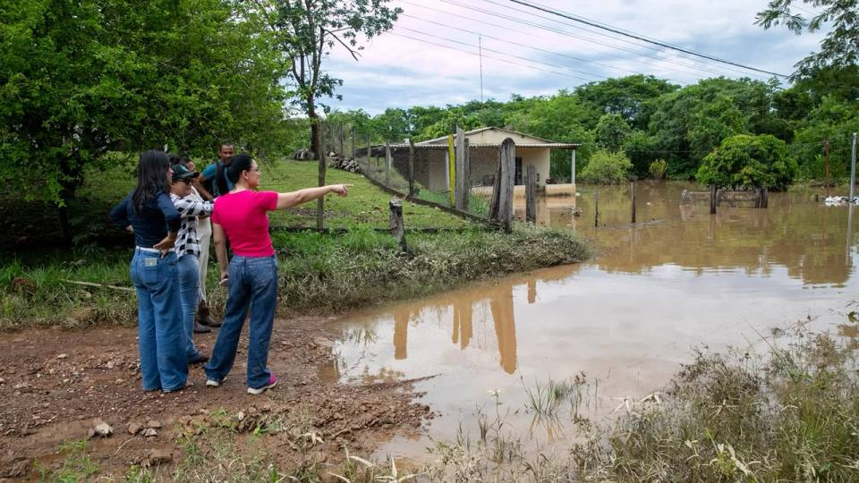
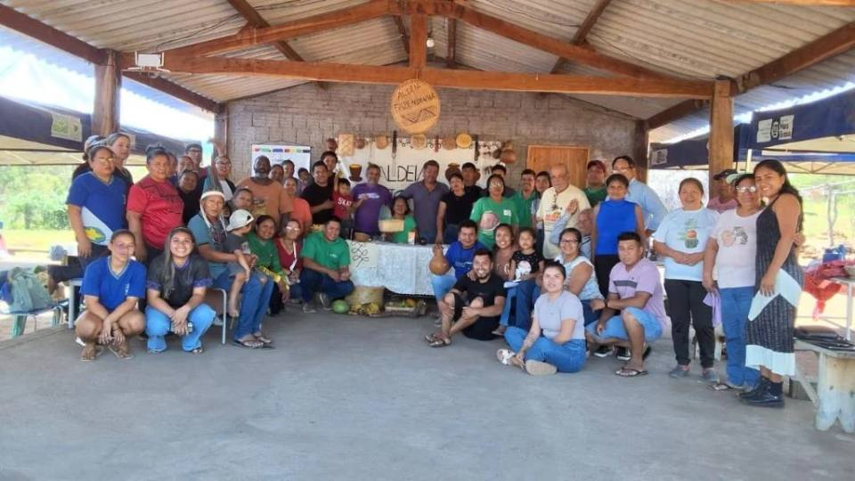
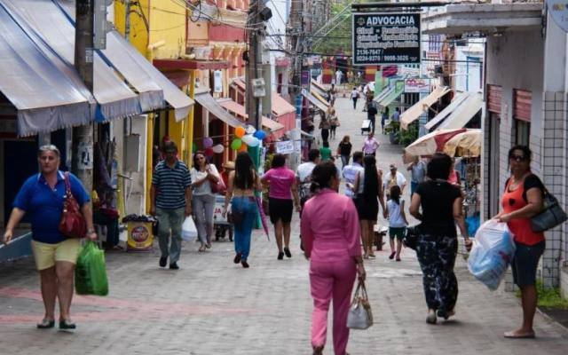

Política
Ver tudoBotelho revela que foi convidado a deixar o União Brasil por dificuldade em montar chapa
Pacote de R$ 772,6 milhões acelera desenvolvimento de Alta Floresta nos últimos sete anos
Abilio condiciona entrega de canetas emagrecedoras a regras do SUS
Economia de Mato Grosso cresce 56% e supera China e Brasil juntos em sete anos
Publicidade · Meio 11080 × 110320 × 100
Geral
Ver tudoDólar sobe para R$ 5,87 com expectativa sobre votação de ajuste fiscal
O mercado financeiro brasileiro teve mais um dia de atenção à votação do ajuste fiscal.
Publicidade300 × 250
Brasil
Ver tudoLula quer rejuvenescer atuação da Secom e modernizar Ministério do Trabalho
O presidente reeleito Luiz Inácio Lula da Silva pretende modernizar estruturas de governo consideradas estratégicas.
Mundo
Ver tudoCrise no Paraguai: 1 milhão de clientes do Ueno Bank já foram ressarcidos
Presidente do Paraguai afirma que mais de um milhão de clientes já receberam de volta.
Publicidade · Meio 21080 × 110320 × 100
Esportes
Ver tudoVídeos
Ver tudoVariedades
Wanessa Camargo revela bastidores do TVZ sem Gominho e revela nervosismo: ‘Dá play’
Aline Campos celebra estreia de ‘Os Farofeiros 3’ e mostra bastidores
Sabrina Sato faz linda homenagem ao pai em dia de aniversário: ‘Meu pai, meu herói!’
Sabrina Sato anuncia nome do filho que espera com Nicolas Prattes: ‘Nosso menino’
Publicidade · Rodapé1080 × 110320 × 100